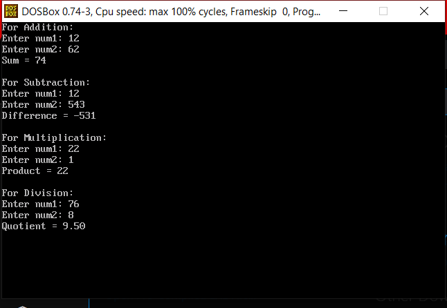
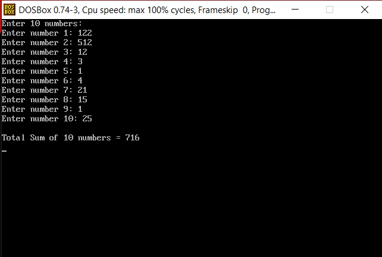
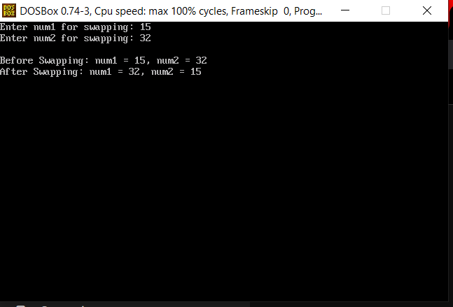
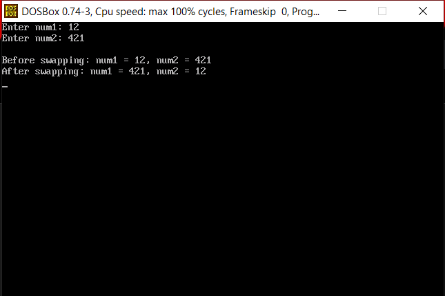
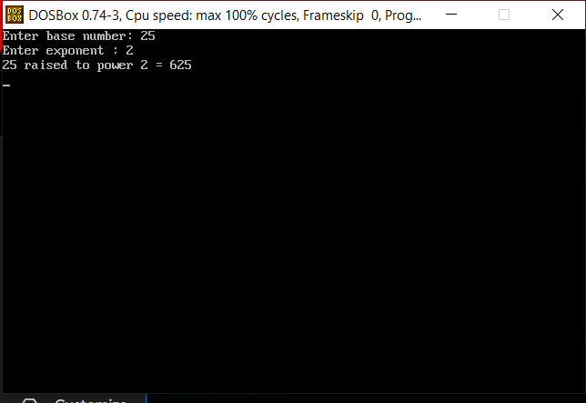
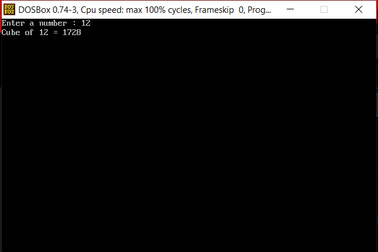

Q1.Write a program to enter 2 number from the users add them and display the answer, again enter 2 number from the user subtract them and display the answer, again enter 2 number from the user add them and display the answer, again enter 2 number from the user multiply them and display the answer, again enter 2 number from the user subtract them and display the answer, again enter 2 number from the user multiply them and display the answer, again enter 2 number from the user divide them and display the answer, again enter 2 number from the user divide them and display the answer, again enter 2 number from the user add them and display the answer ?
#include <stdio.h> #include <conio.h> #include <dos.h> void add(int *ptr1, int *ptr2) { int ans; printf("For Addition\n"); printf("Enter num1: "); scanf("%d", ptr1); printf("Enter num2: "); scanf("%d", ptr2); ans = *ptr1 + *ptr2; printf("Sum = %d\n\n", ans); } void sub(int *ptr1, int *ptr2) { int ans; printf("For Subtraction\n"); printf("Enter num1: "); scanf("%d", ptr1); printf("Enter num2: "); scanf("%d", ptr2); ans = *ptr1 - *ptr2; printf("Difference = %d\n\n", ans); } void mul(int *ptr1, int *ptr2) { int ans; printf("For Multiplication\n"); printf("Enter num1: "); scanf("%d", ptr1); printf("Enter num2: "); scanf("%d", ptr2); ans = (*ptr1) * (*ptr2); printf("Product = %d\n\n", ans); } void divi(int *ptr1, int *ptr2) { int ans; printf("For Division\n"); printf("Enter num1: "); scanf("%d", ptr1); printf("Enter num2: "); scanf("%d", ptr2); if(*ptr2 != 0) { ans = (*ptr1) / (*ptr2); printf("Quotient = %d\n\n", ans); } else { printf("Error! Division by zero.\n\n"); } } void main() { int num1, num2; clrscr(); add(&num1, &num2); sub(&num1, &num2); mul(&num1, &num2); divi(&num1, &num2); delay(5000); }

Q2.Write a program to enter 10 number from the user add the number and display the answer ?
#include <stdio.h> #include <conio.h> #include <dos.h> void add10(int *ptr1) { int i, sum = 0; printf("Enter 10 numbers:\n"); for(i = 1; i <= 10; i++) { printf("Enter number %d: ", i); scanf("%d", ptr1); sum += *ptr1; } printf("\nTotal Sum of 10 numbers = %d\n", sum); } void main() { int num1; clrscr(); add10(&num1); delay(3000); }

Q3.Write a program to return an array from function ?
Q4.Making following program using local and global variable ? Factorial , Reverse , Palindrome , Prime numbers, Armstrong , Fibonacci
Q5.Swap numbers using Call by address ?
#include <stdio.h>
#include

Q6.Swap numbers using Call by function ?
#include <stdio.h> #include <conio.h> #include >dos.h< void swap(int num1, int num2) { int temp; temp = num1; num1 = num2; num2 = temp; printf("After swapping: num1 = %d, num2 = %d\n", num1, num2); } void main() { int num1, num2; clrscr(); printf("Enter num1: "); scanf("%d", &num1); printf("Enter num2: "); scanf("%d", &num2); printf("\nBefore swapping: num1 = %d, num2 = %d\n", num1, num2); swap(num1, num2); delay(3000); }

Q7.Make function for find out power of number, enter the number and power from user ?
#include <stdio.h> #include <conio.h> #include <dos.h> void Power(int *ptr1, int *ptr2) { long int result = 1; int i; printf("Enter base number: "); scanf("%d", ptr1); printf("Enter exponent : "); scanf("%d", ptr2); for(i = 1; i <= *ptr2; i++) { result = result * (*ptr1); } printf("%d raised to power %d = %ld\n", *ptr1, *ptr2, result); } void main() { int num1, num2; clrscr(); Power(&num1, &num2); delay(3000); }

Q8.Make function for find out Cube a user entered number ?
#include <stdio.h> #include <conio.h> #include <dos.h> void Cube(int *ptr1) { int c; printf("Enter a number (num1): "); scanf("%d", ptr1); cube = (*ptr1) * (*ptr1) * (*ptr1); printf("Cube of %d = %d\n", *ptr1, c); } void main() { int num1; clrscr(); Cube(&num1); delay(3000); }
